Руководство пользователя роутера
Ваш роутер уже полностью настроен и готов к работе. Предустановлена подписка с доступом к более чем 100 серверам, установлено автообновление. Просто подключитесь к Wi-Fi и пользуйтесь.
Если не хотите читать полностью инструкцию и хотите получить ответ сразу же конкретно по вашему вопросу, либо возникли вопросы в процессе настройки, можете обратиться за помощью в чат-бот.
Открыть чат-бот в Telegram → 🔗 https://t.me/Aleksey_Avito_BotЧто делать, если роутер не работает?
1. Проверка физического подключения
Прежде всего убедитесь, что всё правильно подключено — см. раздел «Подключение». Если подключение верное, но роутер не работает — просто перезагрузите его: вытащите вилку питания и вставьте обратно. В большинстве случаев это помогает.
2. Не работает даже обычный интернет
Если перезагрузка не помогла — проверьте обычные сайты: Яндекс, ВКонтакте, Гугл. Если они тоже не открываются — дело в ВПН: он запускается раньше, чем устанавливается основное соединение. Нужно временно его отключить.
Для этого зайдите в веб-панель → Services → Podkop → Диагностика:
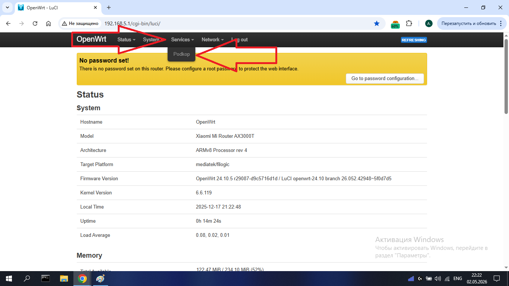
Открываем Services → Podkop, переходим во вкладку Диагностика
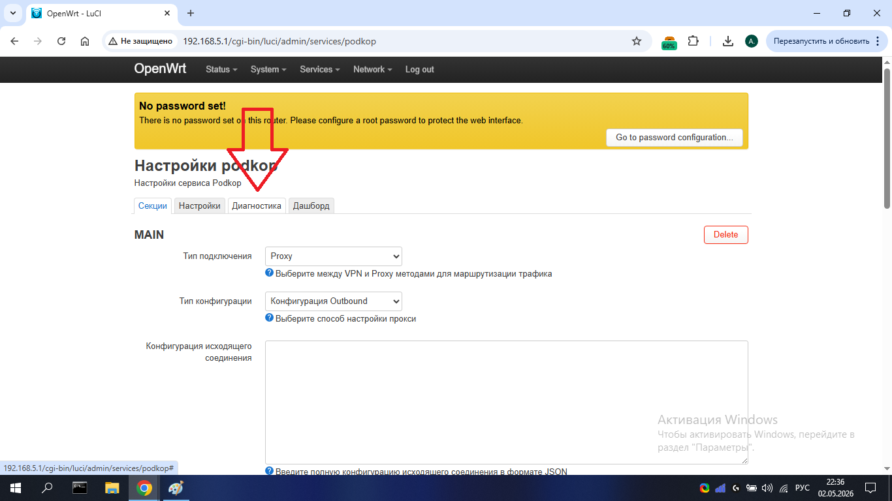
Вкладка Диагностика — кнопки управления Podkop
- Нажмите
Отключить автостарт - Нажмите
Остановить podkop
(Если вместо «Остановить» видите «Запустить» — podkop уже остановлен, вторую кнопку нажимать не нужно)
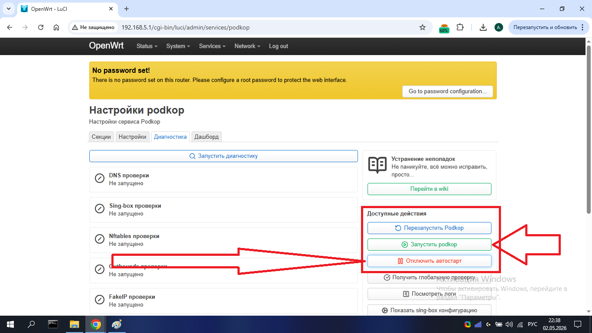
Кнопки Отключить автостарт и Остановить podkop
- Перезагрузите роутер. Когда появится обычный интернет — нажмите
Включить автостартиЗапустить podkop
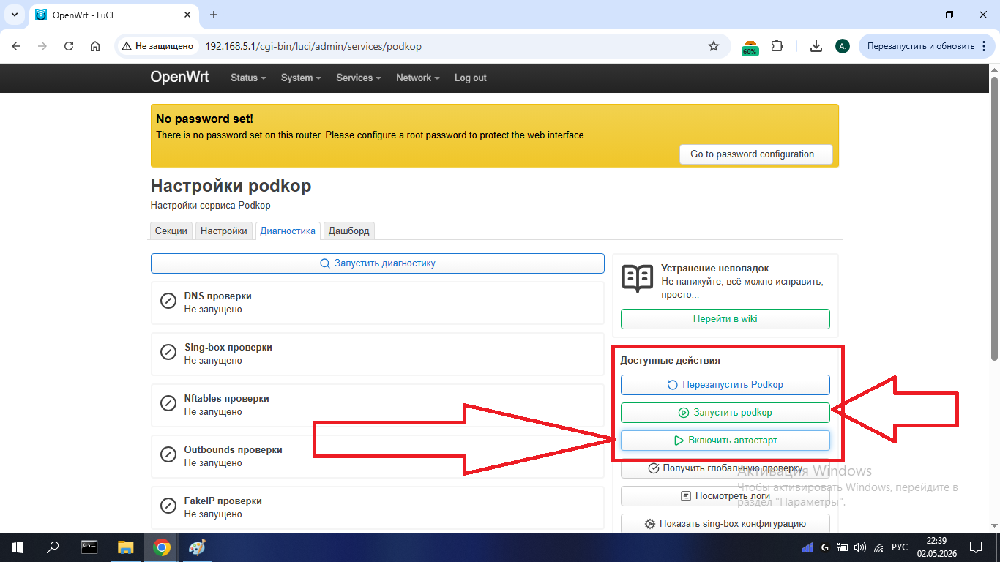
Нажимаем Включить автостарт и Запустить podkop
3. Обычный интернет есть, заблокированные сайты не работают
Зайдите в веб-панель → Services → Podkop → Диагностика и нажмите Перезапустить podkop. Подождите до 5 минут.
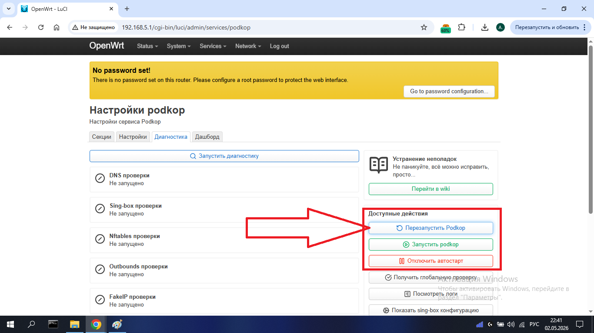
Кнопка «Перезапустить Podkop» во вкладке Диагностика
4. Углублённая диагностика
Если предыдущие варианты не помогли — необходимо провести диагностику и найти конкретную причину. Подробное описание — в разделе «Диагностика» ниже.
Диагностика
Если предыдущие шаги не помогли — нужно запустить диагностику и найти конкретную причину неполадки.
Как запустить диагностику
Находясь в веб-панели, перейдите в Services → Podkop и откройте вкладку Диагностика. Нажмите кнопку Запустить диагностику.
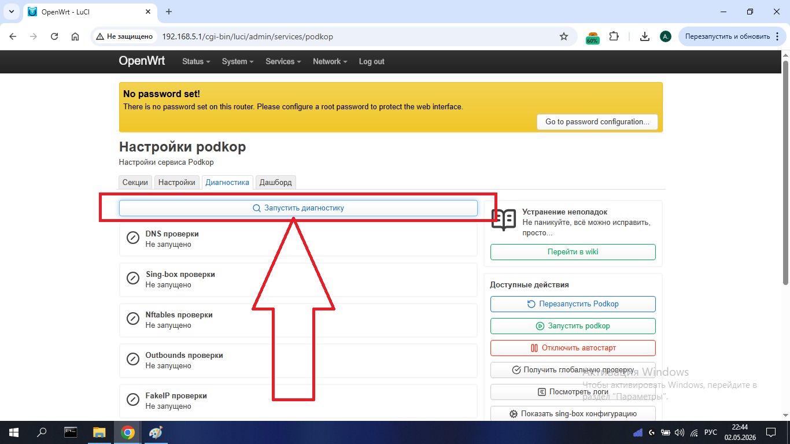
Вкладка Диагностика — нажимаем «Запустить диагностику»
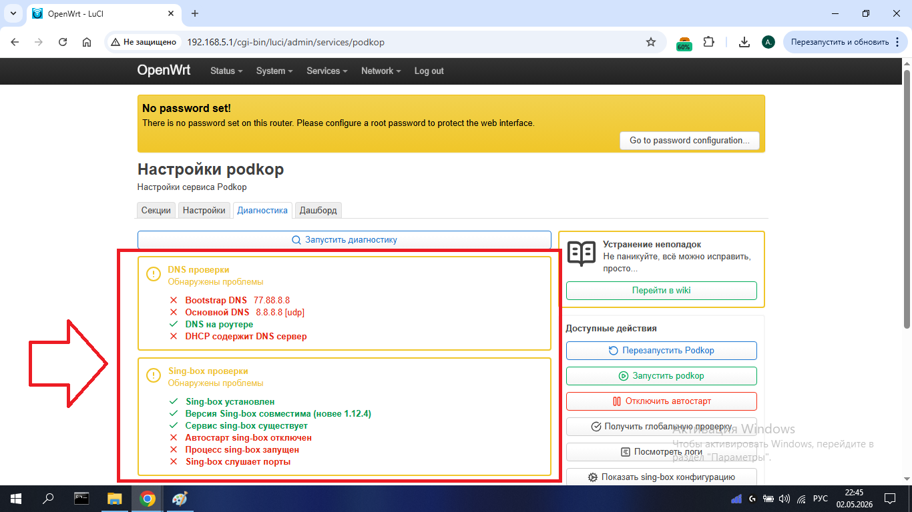
Результат диагностики с ошибками при первом запуске
Успешная диагностика
Если все секции зелёные — роутер работает корректно.
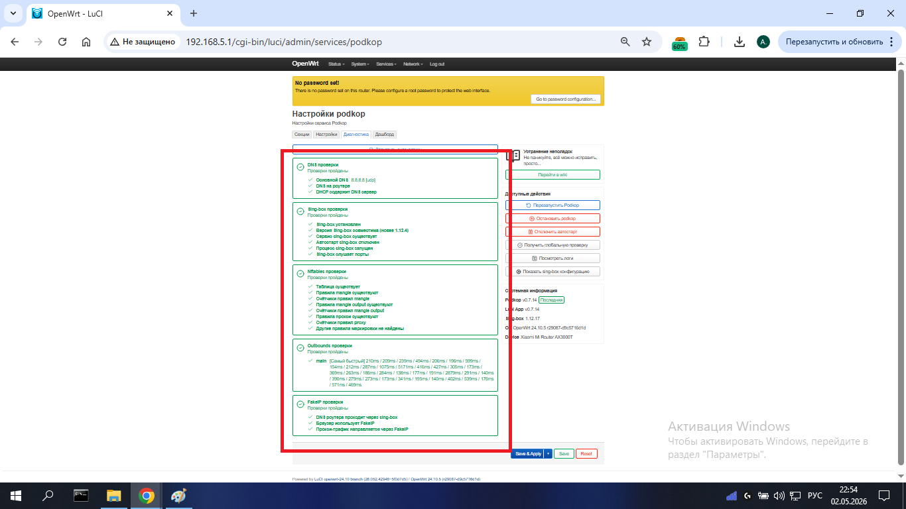
Все проверки пройдены — все секции зелёные
Ошибка: «Прокси-трафик не маршрутизируется через FakeIP»
Эта ошибка в конце диагностики означает, что серверы недоступны.
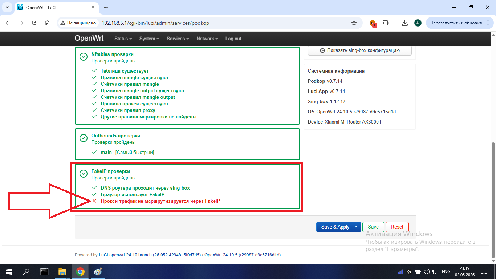
Ошибка: «Прокси-трафик не маршрутизируется через FakeIP»
Перейдите во вкладку Дашборд и нажмите «Тестирование задержки». Если у сервера пишется N/A — его заблокировали. Если сервер рабочий — рядом с ним отображается задержка (пинг) в миллисекундах. Соответственно, если у всех серверов N/A — их нужно обновить.
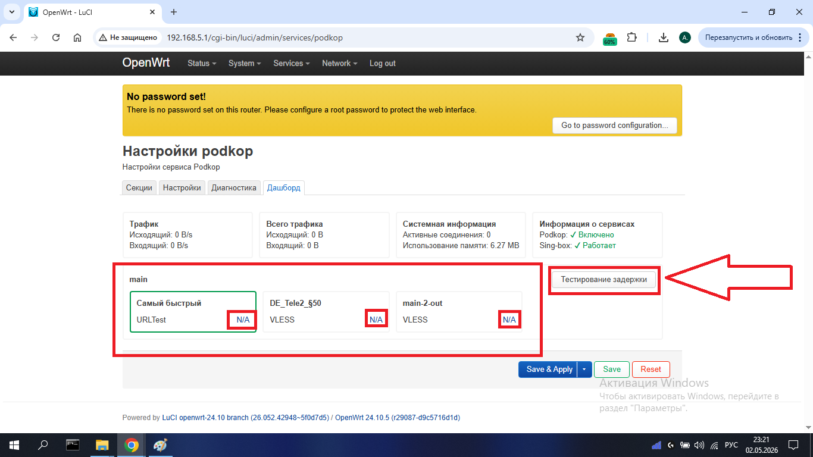
Дашборд: серверы со статусом N/A — недоступны
Перейдите в раздел «Обновление серверов».
Ошибка FakeIP в браузере
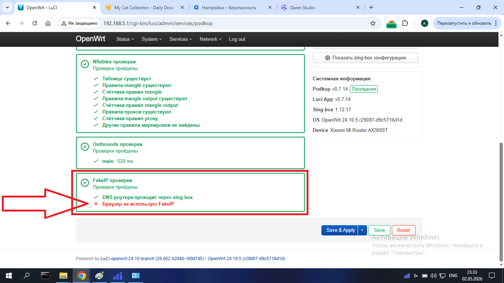
Браузер не использует FakeIP
Если диагностика показывает ошибку FakeIP, но серверы живые — проблема в настройках браузера или сетевого адаптера устройства. При данной ошибке заблокированные сервисы будут работать на других устройствах, подключённых к роутеру, но не на этом компьютере. Необходимо проверить и отключить «Безопасный DNS» в настройках браузера, а также проверить настройки DNS сетевого адаптера устройства.
Для Chrome — введите в адресную строку и нажмите Enter:
chrome://settings/security?search=dns
Найдите пункт «Использовать защищённый DNS» и отключите его.
Для других браузеров — зайдите в Настройки (значок ⚙️ или три точки в правом верхнем углу). В разделе «Конфиденциальность» или «Безопасность» найдите и отключите «Безопасный DNS» / «DNS over HTTPS».
После отключения:
- Полностью закройте и перезапустите браузер
- Проверьте работу заблокированных сервисов
- Откройте новую вкладку в режиме Инкогнито (Ctrl+Shift+N) и снова запустите диагностику в веб-панели
Подключение роутера
Самый простой способ — поставить купленный роутер вторым после вашего основного роутера.
- Вставьте один конец патч-корда в LAN-порт вашего основного роутера.
LAN-портов обычно несколько, они выделены цветом, отличным от WAN. - Второй конец — в WAN-порт купленного роутера.
WAN — порт для кабеля от провайдера. Он один и стоит отдельно.
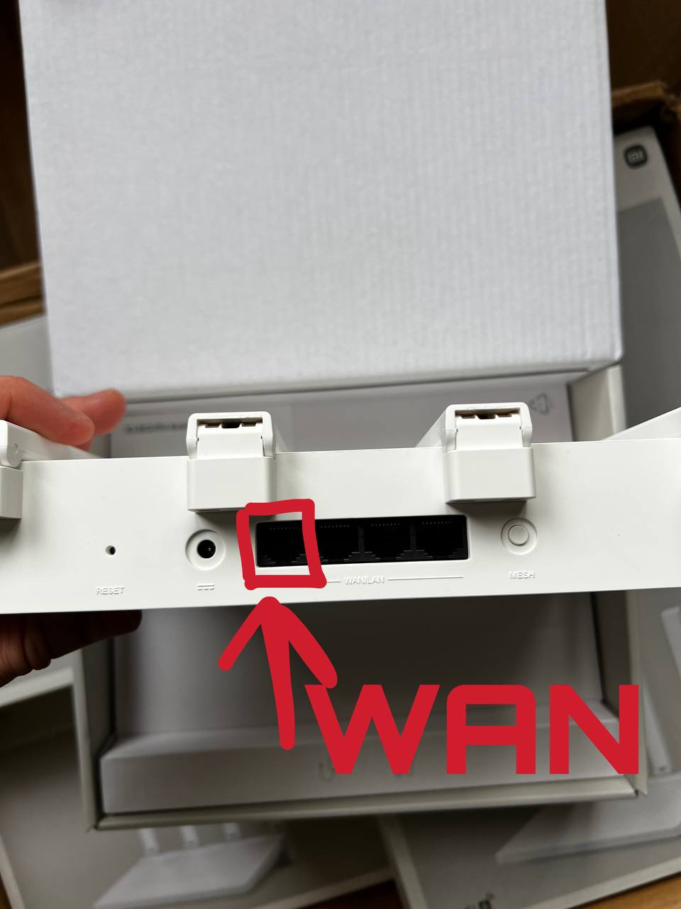
Задняя панель Xiaomi AX3000T — выделен WAN-порт
После соединения подключите блок питания. Через пару минут загорится синий светодиод — роутер готов к работе.
Веб-панель управления
Подключитесь к Wi-Fi роутера (или соединитесь с ним через патч-корд), откройте любой браузер и перейдите по одному из адресов:
192.168.5.1Адрес 2:
openwrt.lan/cgi-bin/luci/Логин:
rootПароль: не задан — просто нажмите Log in
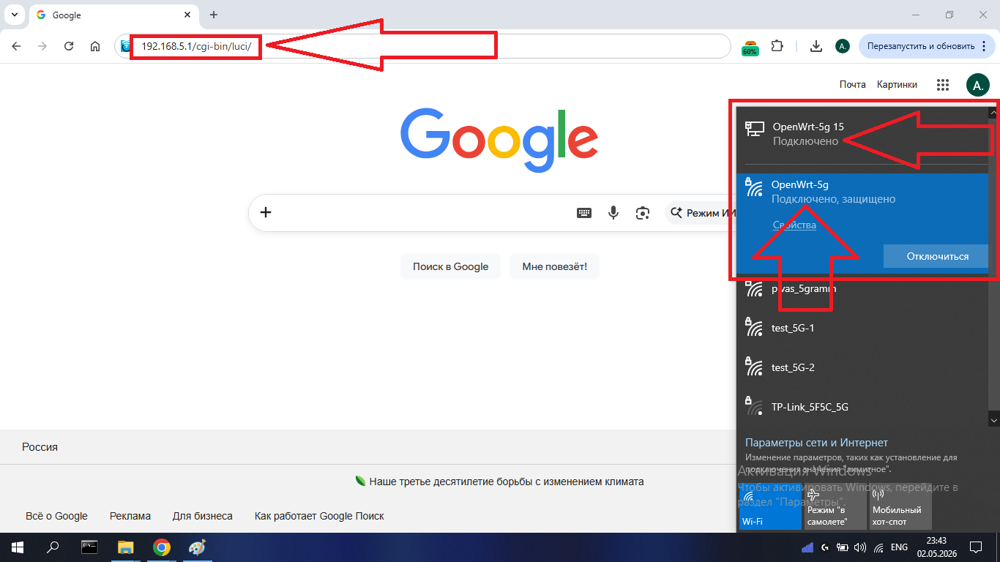
Подключаемся к сети роутера, вводим адрес в браузере
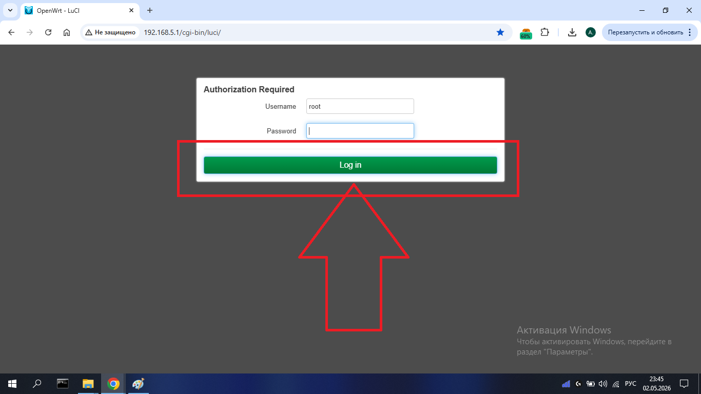
Страница авторизации — пароль не нужен, нажимаем Log in
Настройки Podkop
Этот пакет отвечает за выборочную маршрутизацию. Разберём ключевые параметры.
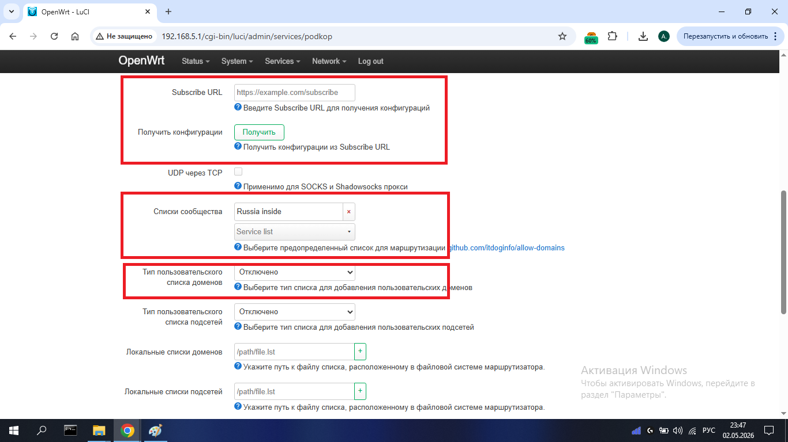
Основные параметры настройки Podkop
Subscribe URL
Этот параметр позволяет вставить ссылку подписки вашего VPN, купленного, например, в Telegram. После вставки ссылки подписки в строку Subscribe URL — нажмите кнопку «Получить» возле параметра «Получить конфигурации». Произойдёт загрузка доступных серверов в параметр «Доступные конфигурации» — после чего вы сможете добавить нужный сервер простым нажатием по нему.
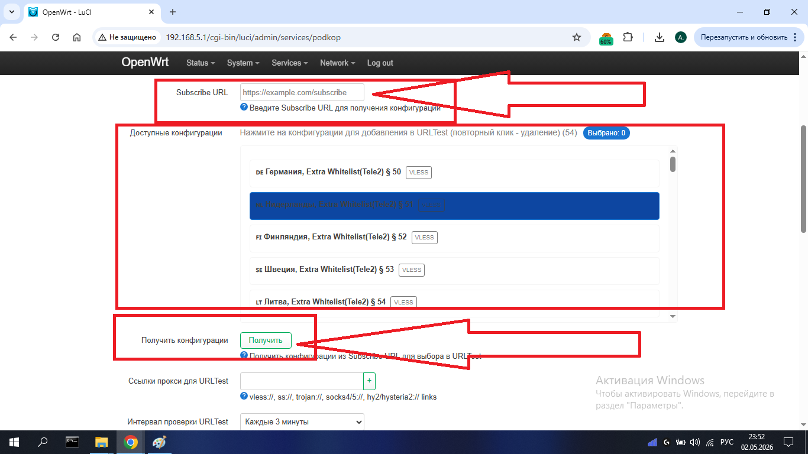
Subscribe URL — вставляем ссылку, получаем и выбираем конфигурации
Списки сообщества
Выбираете, трафик каких сервисов пускать через VPN. Russia inside уже выбран — это список большинства популярных заблокированных в России ресурсов. Нажмите Service list, чтобы добавить конкретные сервисы дополнительно.
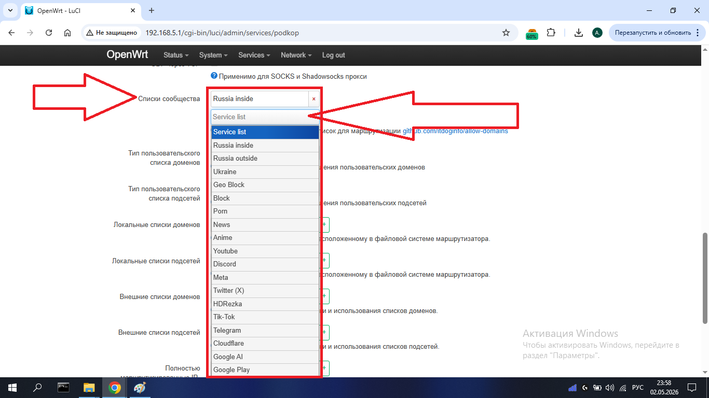
Service list — доступные списки
Пользовательские домены
Добавьте свой домен, если его нет в списках сообщества. Домены, прописанные в этом параметре, будут открываться через VPN. Два способа:
- Динамический список — добавляете домены по одному через кнопку «+»
- Текстовый список — вставляете сразу несколько через запятую или с новой строки
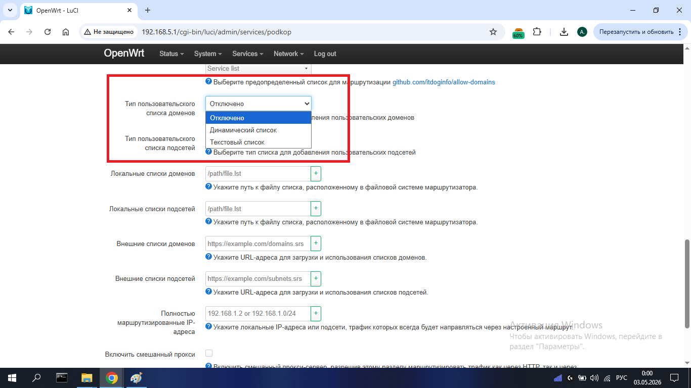
Выбор типа: Динамический или Текстовый список
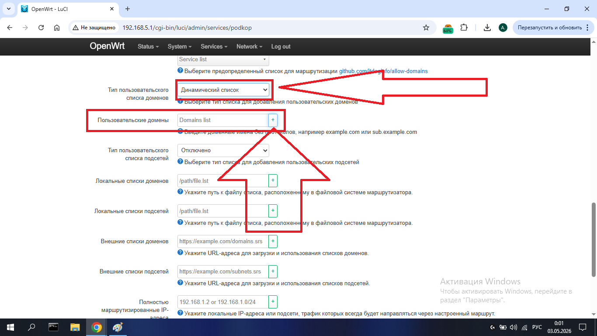
Динамический список — добавление по одному домену
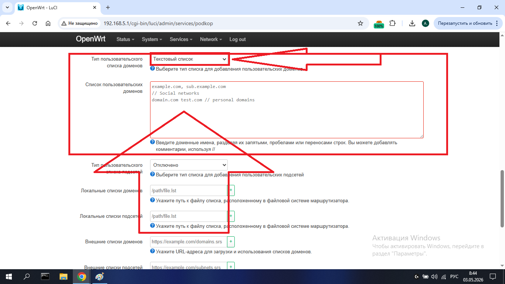
Текстовый список — вставка нескольких доменов
Полностью маршрутизируемые IP-адреса
Укажите IP конкретного устройства, чтобы весь его трафик шёл через VPN. Чаще всего используется для подключения игровых приставок или ASIC (майнинг-устройств). Учтите: на этом устройстве не будут открываться банки и госсервисы.
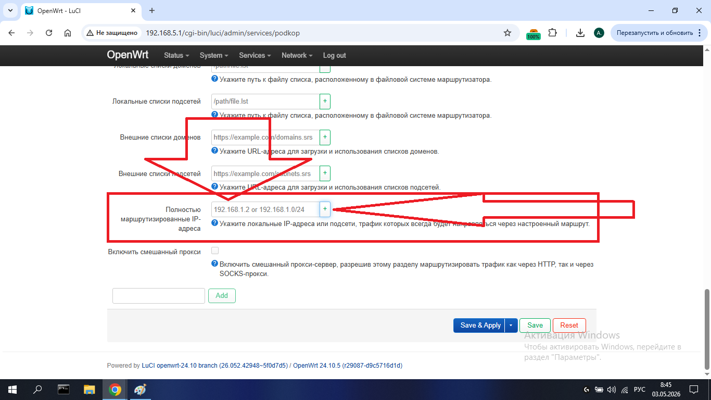
Параметр «Полностью маршрутизируемые IP-адреса»
Save & Apply — иначе настройки не сохранятся.
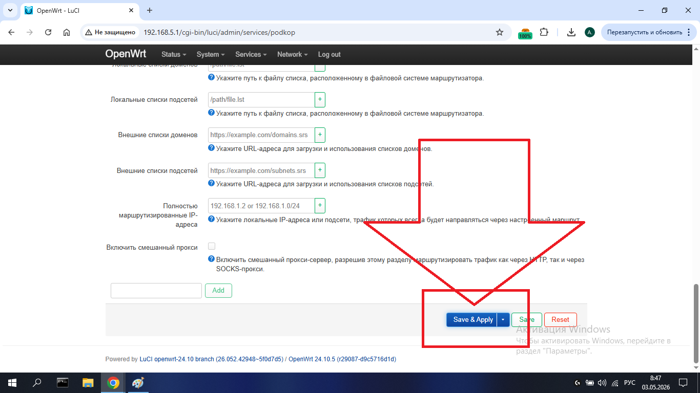
После изменений обязательно нажимайте Save & Apply
Все через ВПН
По умолчанию на роутере настроена выборочная маршрутизация — весь трафик идёт напрямую через вашего провайдера, кроме тех доменов, которые прописаны для маршрутизации через ВПН. За счёт этого достигается полная работоспособность как отечественных сервисов — банки, маркетплейсы, гос. ресурсы не ругаются на включённый ВПН, так и зарубежных заблокированных ресурсов — они маршрутизируются через серверы ВПН, благодаря чему открываются.
Однако есть возможность сделать так, чтобы ВЕСЬ трафик шёл через серверы ВПН. Доступно два варианта:
- Полная маршрутизация ВСЕГО трафика через ВПН с автовыбором сервера с наименьшим пингом (URLTest)
- Полная маршрутизация ВСЕГО трафика через 1 выбранный сервер
🔑 Пароль для включения данного режима
Как включить режим
- Зайдите в веб-панель роутера —
192.168.5.1илиopenwrt.lan/cgi-bin/luci/ - Перейдите во вкладку Services → Podkop
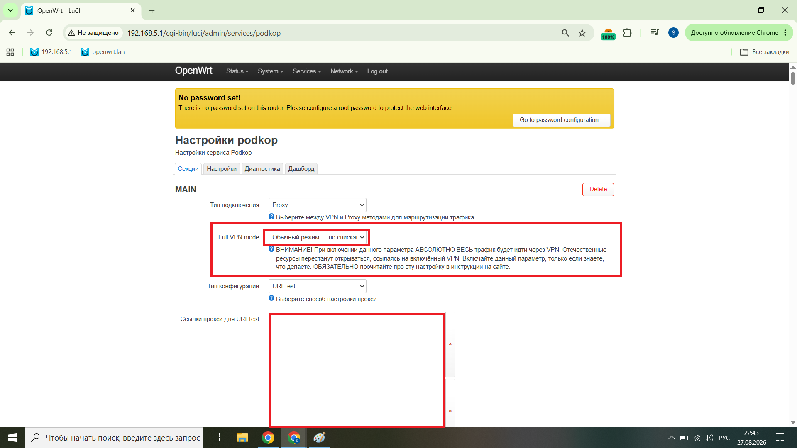
Открываем Services → Podkop
Вы увидите, что по умолчанию выбран режим маршрутизации по спискам. Чтобы поставить режим полной маршрутизации — выберите необходимый режим FullVPN и введите пароль.
- Выберите соответствующий режим
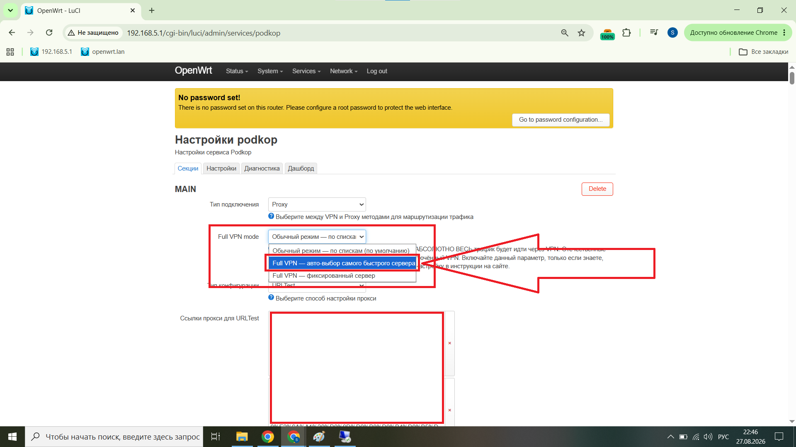
Выбираем режим Full VPN с автовыбором сервера
- Введите пароль
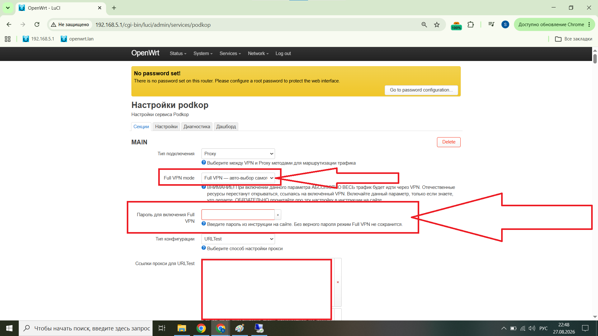
Вводим пароль для подтверждения
- Промотайте страницу в самый низ и сохраните настройки, нажав кнопку
Save & Apply
Нажимаем Save & Apply
- Выберите соответствующий режим
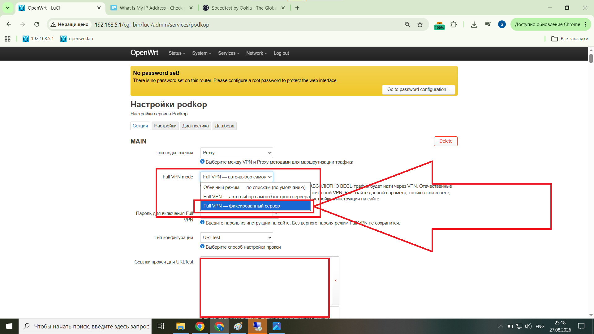
Выбираем режим Full VPN с ручным выбором сервера
- Выберите любой необходимый сервер из списка
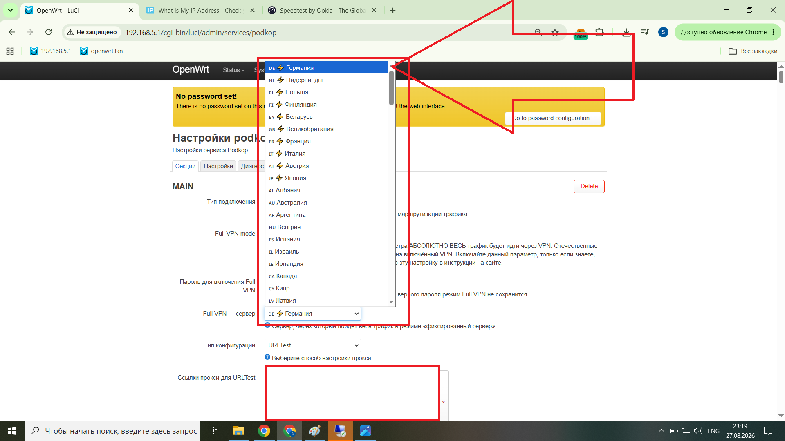
Выбираем нужный сервер из списка
- Введите пароль
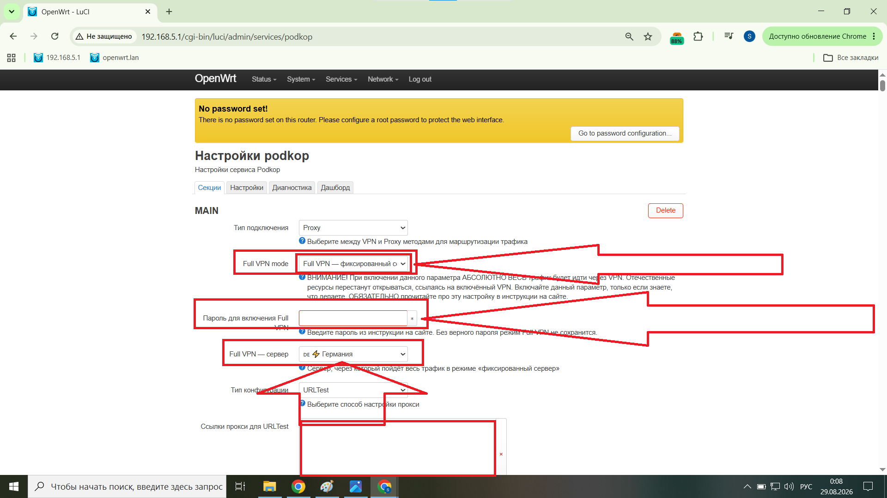
Вводим пароль для подтверждения
- Промотайте страницу в самый низ и сохраните настройки, нажав кнопку
Save & Apply
Нажимаем Save & Apply
Обновление настроек
Я постоянно дорабатываю и улучшаю прошивку — чиню то, что ломает Роскомнадзор, и упрощаю всевозможные настройки. Для того чтобы иметь новейшие версии Podkop и всех моих улучшений — необходимо загрузить на свой роутер бекап, соответствующий вашей модели роутера. Как это сделать — читайте в главе Бекапы.
Как сбросить кэш браузера
Выберите любой удобный способ:
- Сбросить кэш браузера — обычно Ctrl + Shift + Del на Windows / Linux или ⌘ + Shift + Del на Mac
- Открыть страницу в режиме инкогнито / приватного
- Перезапустить браузер
- Перезагрузить устройство
Обновление серверов
Обновление серверов возможно несколькими способами:
Загрузка бекапа рассматривается в «Бекапы прошивки». Обновление серверов посредством нажатия соответствующей кнопки или выполнения скрипта будет рассмотрено далее в этой главе.
Способ 1 — кнопка «Обновление серверов»
- Зайдите в веб-панель роутера —
192.168.5.1илиopenwrt.lan/cgi-bin/luci/ - Перейдите во вкладку Services → Podkop → Дашборд (подробнее — в разделе «Смена серверов»). Нажмите кнопку «Обновить сервера»
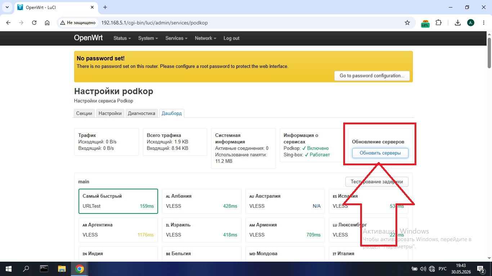
Нажимаем кнопку «Обновить сервера» во вкладке Дашборд
- После успешного обновления серверов увидите соответствующую надпись и количество обновлённых серверов
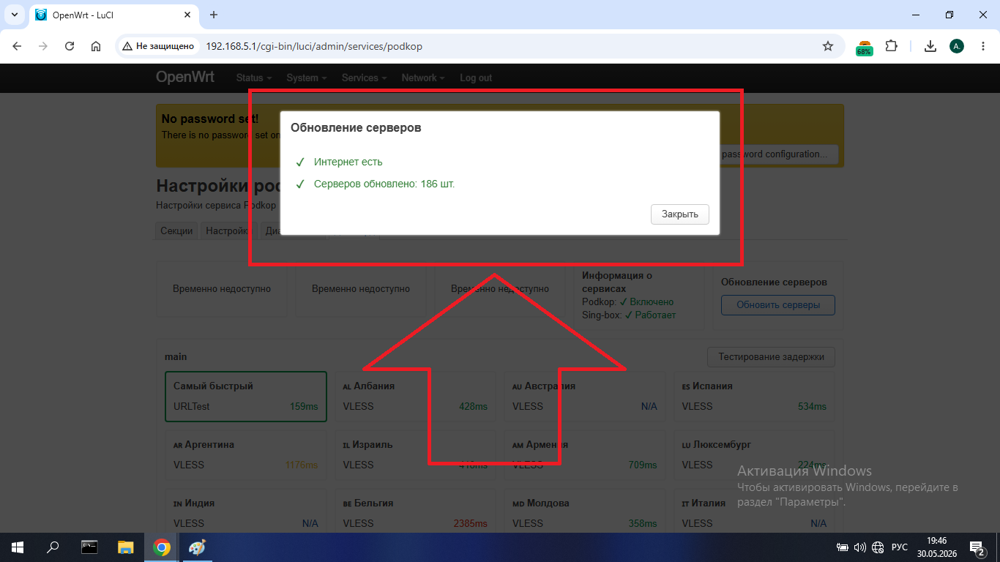
Успешное обновление — надпись с количеством обновлённых серверов
- Если интернета на роутере нет — будет соответствующая ошибка и сервера не обновятся. Проверьте подключение к интернету и при необходимости восстановите его по разделу «Что делать, если роутер не работает?»
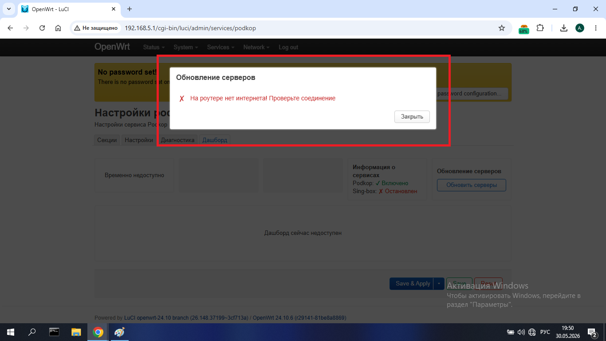
Ошибка обновления при отсутствии интернета на роутере
- Зайдите в веб-панель роутера —
192.168.5.1илиopenwrt.lan/cgi-bin/luci/ - Перейдите во вкладку Services → Podkop → Диагностика (подробнее — в разделе «Смена серверов»). Нажмите кнопку «Сменить сервер»
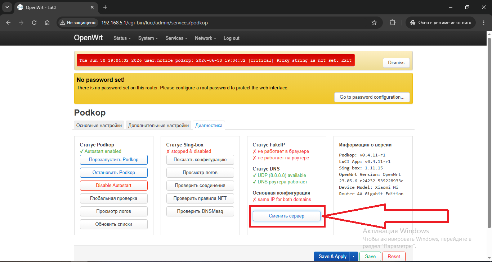
Нажимаем кнопку «Сменить сервер»
- После успешной смены сервера вы увидите соответствующую надпись, страну сервера и его пинг (задержку)
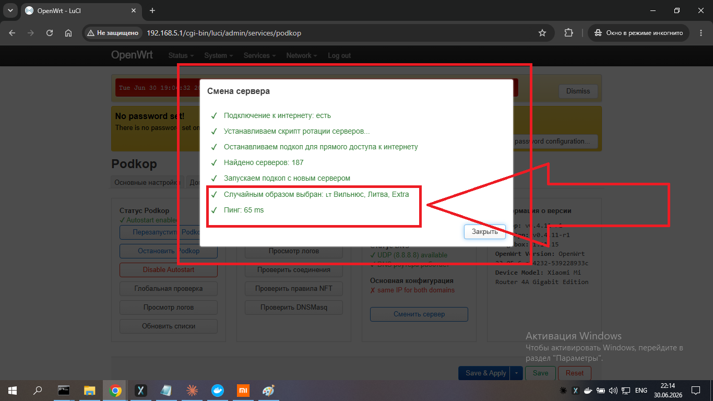
Успешная смена сервера — страна и задержка
- Если интернета на роутере нет — будет соответствующая ошибка и сервера не обновятся. Проверьте подключение к интернету и при необходимости восстановите его по разделу «Что делать, если роутер не работает?»
Способ 2 — скрипт через SSH
- Скачайте Putty: putty.exe — либо по любой ссылке из интернета
- Запустите, в поле «Имя хоста (или IP-адрес)» введите
192.168.5.1, нажмите «Соединиться»
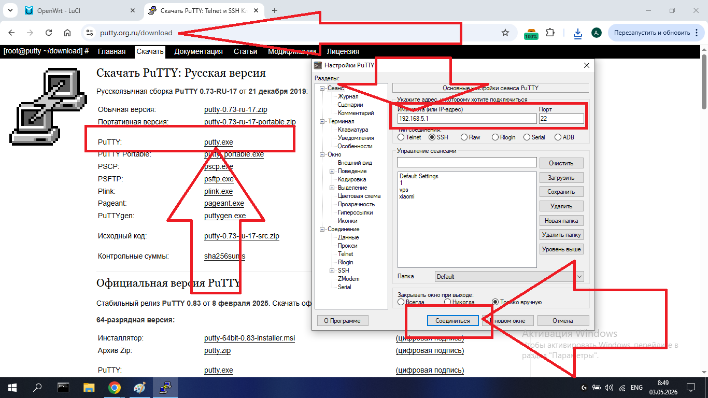
Вводим IP 192.168.5.1 и нажимаем Соединиться
- Появится окно предупреждения безопасности — нажмите «Да»
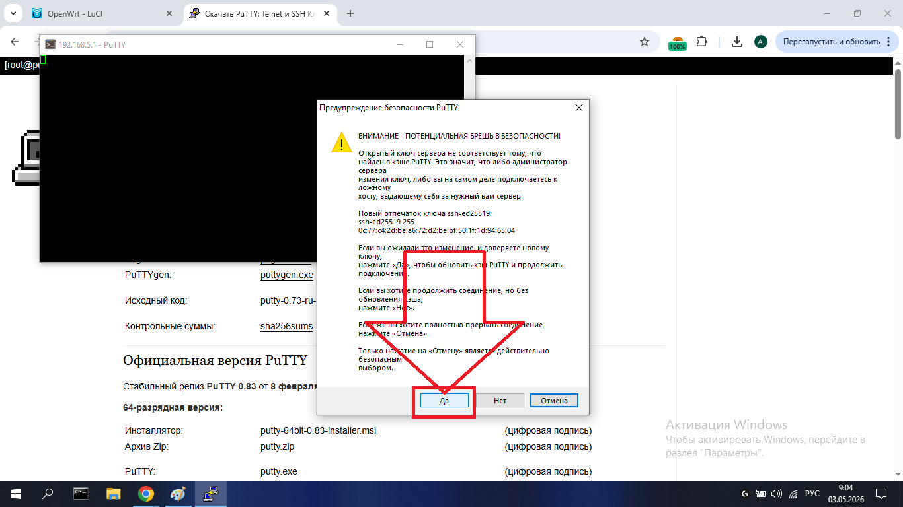
Нажимаем Да
- На запрос
login as:введитеrootи нажмите Enter
Если ранее задавали пароль — введите его (символы при вводе не отображаются)
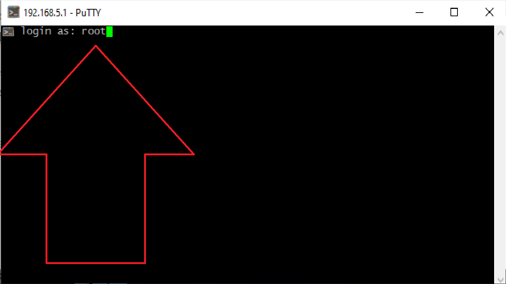
Вводим root и нажимаем Enter
Далее скрипт обновления серверов отличается в зависимости от модели роутера.
- Скопируйте команду ниже, вставьте в терминал правой кнопкой мыши и нажмите Enter:
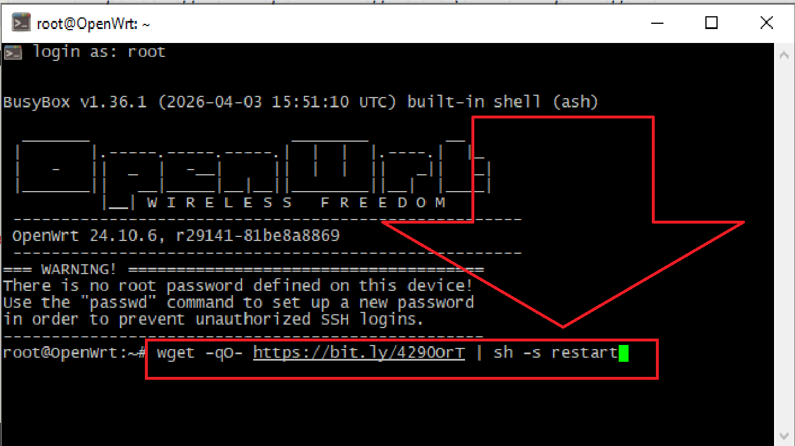
Вставляем команду правой кнопкой мыши и нажимаем Enter
wget -qO /tmp/upd.sh https://bit.ly/4290OrT && sh /tmp/upd.sh restart; rm -f /tmp/upd.sh
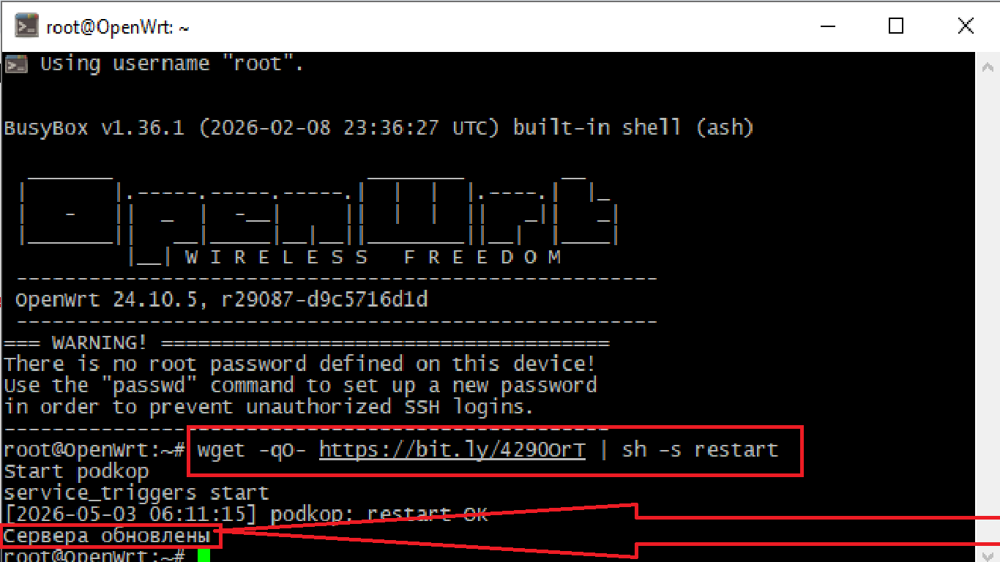
Успешное обновление — сообщение «Сервера обновлены»
- Скопируйте команду ниже, вставьте в терминал правой кнопкой мыши и нажмите Enter:
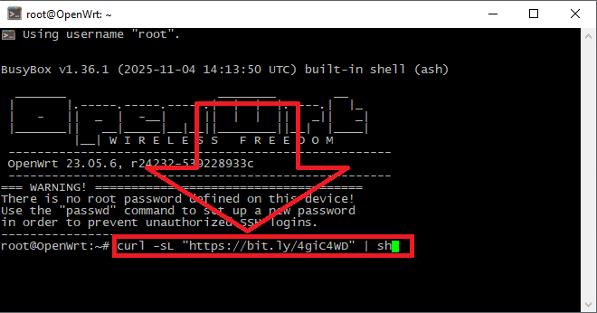
Вставляем команду правой кнопкой мыши и нажимаем Enter
curl -sL "https://bit.ly/4giC4WD" | sh
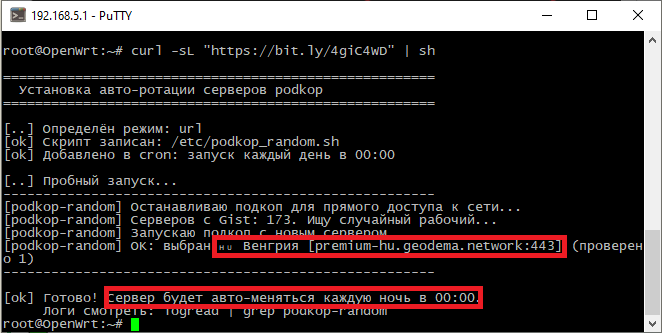
Успешное обновление — сообщение «ОК: выбран Венгрия»
Сброс настроек и восстановление
Если вы проводили эксперименты с роутером или изменяли настройки, после чего он перестал работать — перед загрузкой бекапа необходимо сделать полный сброс до заводских настроек.
Способ 1 — кнопка на корпусе роутера
- Найдите кнопку Reset на корпусе роутера — обычно это маленькое отверстие или небольшая кнопка сзади или снизу устройства
- Возьмите скрепку или зубочистку и удерживайте кнопку 10–15 секунд при включённом роутере
- Роутер перезагрузится — светодиод начнёт мигать. Дождитесь полной загрузки (~2–3 минуты)
- После сброса подключитесь к роутеру — названия Wi-Fi сетей и пароль прежние (как при покупке). Состояние роутера — как при покупке, но без прописанных серверов VPN
Способ 2 — через веб-панель
- Зайдите в веб-панель (
192.168.5.1) - Перейдите: System → Backup / Flash Firmware
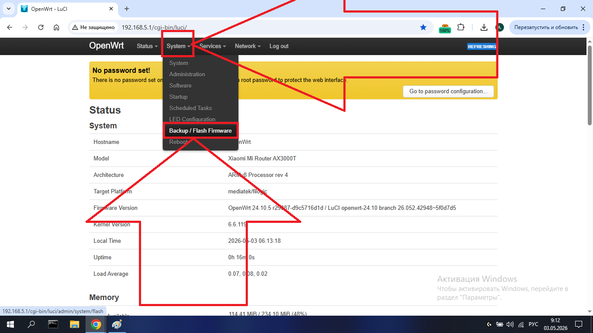
Открываем System → Backup / Flash Firmware
- Нажмите кнопку Perform reset
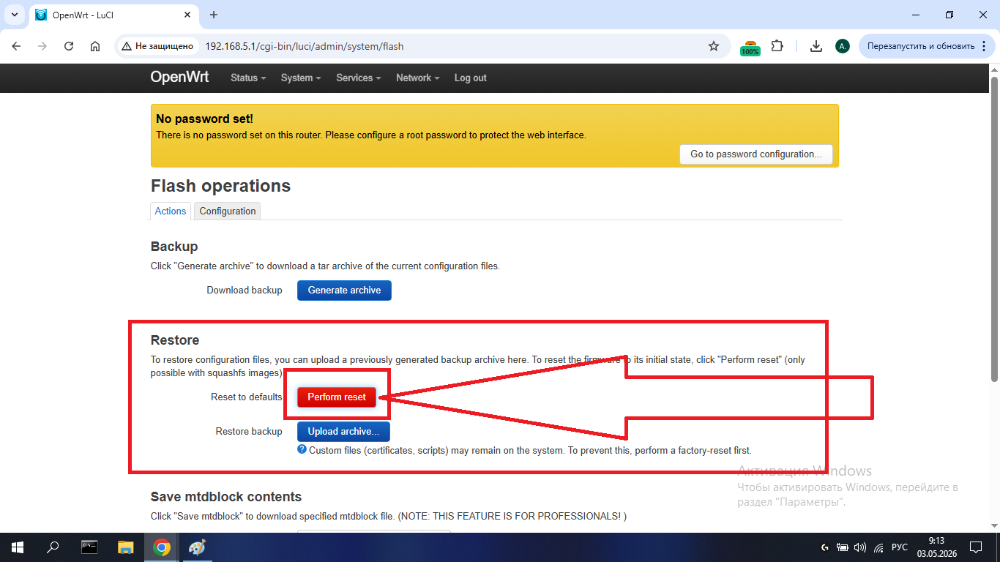
Нажимаем Perform reset
- Подтвердите действие — нажмите OK — роутер перезагрузится
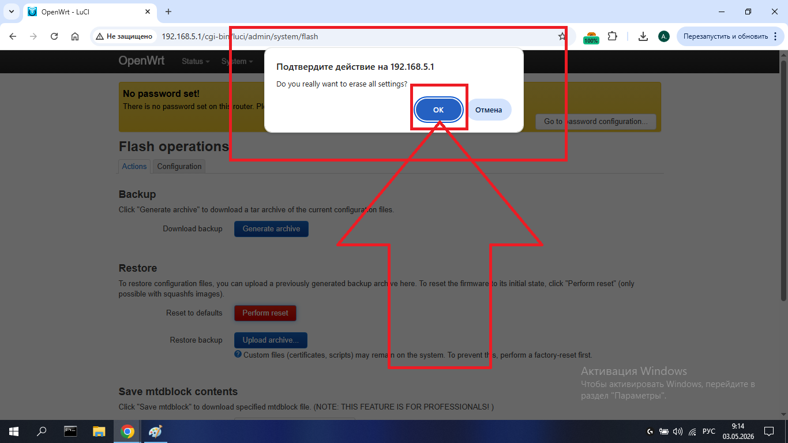
Нажимаем OK для подтверждения сброса
После сброса роутер готов к новым экспериментам, либо добавлению серверов через скрипт или бекап
Бекапы прошивки
Бекапы — это готовые файлы прошивки с уже настроенной выборочной маршрутизацией и всеми параметрами как при покупке. Загрузка бекапа позволяет:
- Восстановить роутер после случайного сброса настроек
- Обновить серверы VPN — как альтернатива SSH-скрипту из раздела «Обновление серверов»
- Вернуть роутер к первоначальному состоянию после любых экспериментов
❓ FAQ: Как отличить Xiaomi 4A Gigabit Version 1 от Version 2?
Способ 1 — по корпусу:
Version 2 имеет на задней стороне роутера крепление на стену, а Version 1 — не имеет.
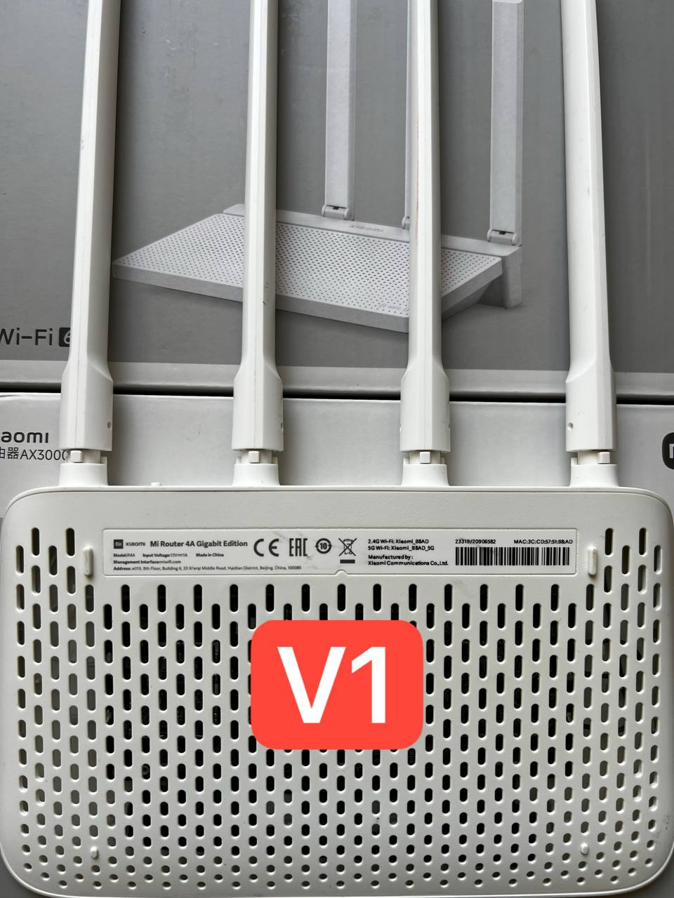
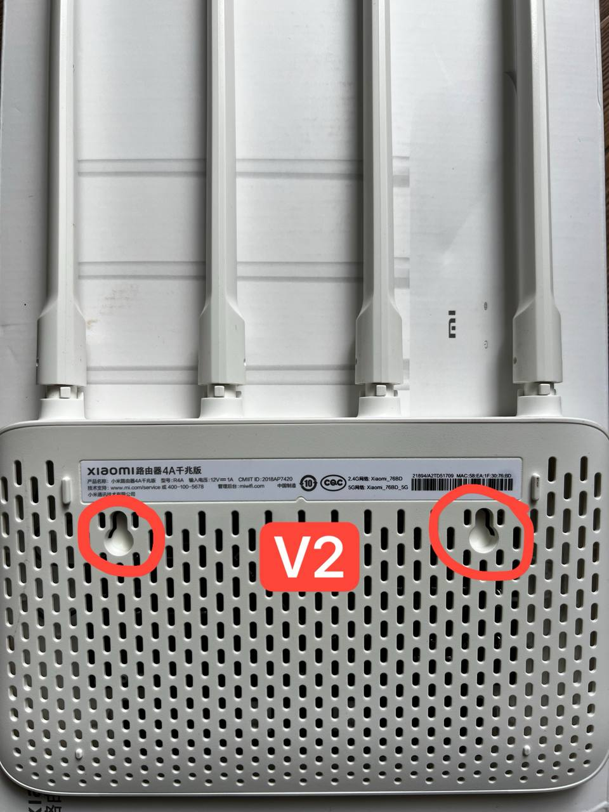
Способ 2 — через веб-интерфейс:
Зайдите в веб-панель роутера и посмотрите модель в разделе Status.
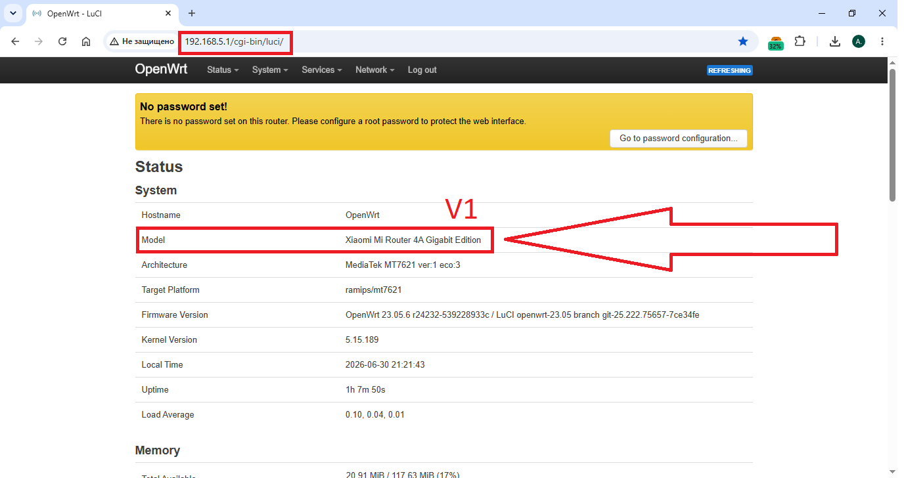
Version 1
Version 2
Как загрузить бекап
- Войдите в веб-панель (
192.168.5.1) - Перейдите: System → Backup / Flash Firmware
Открываем System → Backup / Flash Firmware
- Нажмите Upload archive...
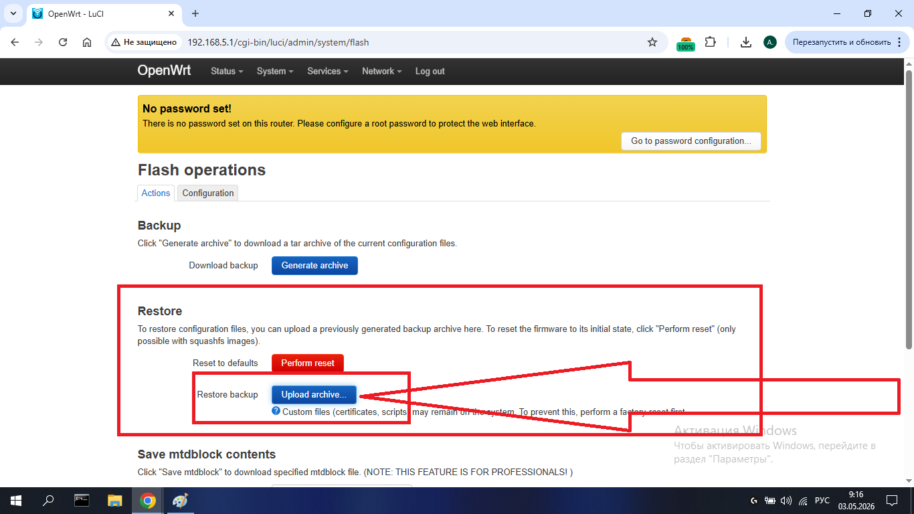
Нажимаем Upload archive...
- В открывшемся окне нажмите Browse... и выберите скачанный файл бекапа
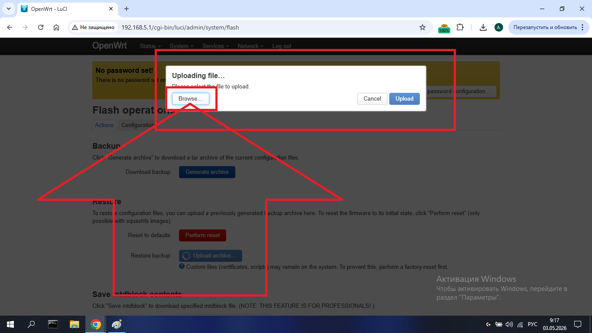
Нажимаем Browse и выбираем файл
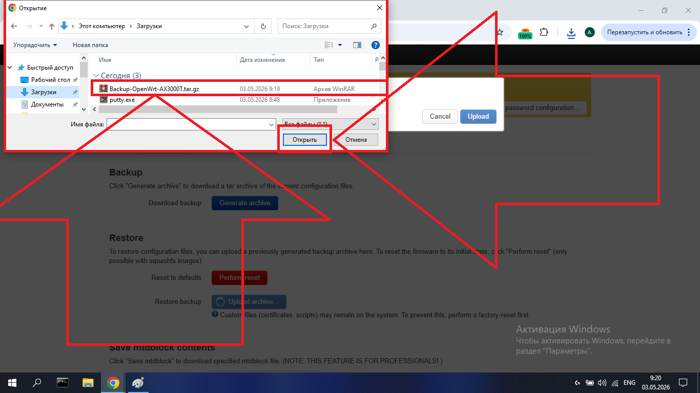
Выбираем файл Backup-OpenWrt-«Модель_роутера».tar.gz
- После выбора файла нажмите Upload
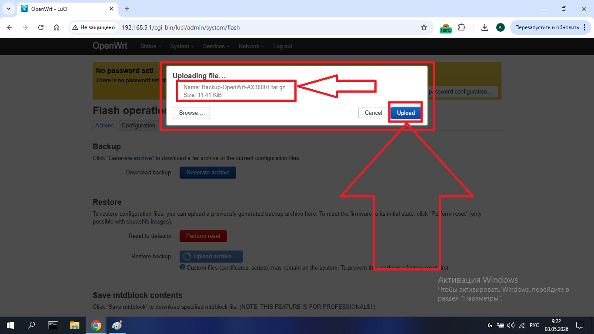
Файл выбран — нажимаем Upload
- Появится список файлов для восстановления — нажмите Continue для подтверждения
Нажимаем Continue для завершения загрузки
- Роутер перезагрузится (~3–5 минут). Дождитесь синего светодиода
- Подключитесь к Wi-Fi и наслаждайтесь доступом к заблокированным сервисам. При необходимости: «Что делать, если не работает» или «Диагностика»
Игровые приставки / Майнинг-устройства
Если вам нужно пустить весь трафик конкретного устройства через VPN (например, PlayStation, Xbox или ASIC (майнинг-устройство)) — используйте параметр «Полностью маршрутизируемые IP-адреса» в настройках Podkop.
В последних версиях прошивки я доработал этот параметр, поэтому ниже сначала идёт обновлённая инструкция — она намного проще. Ниже неё — основная (старая) инструкция.
Обновлённая инструкция (рекомендуется)
- Зайдите в веб-панель роутера —
192.168.5.1илиopenwrt.lan/cgi-bin/luci/ - Перейдите во вкладку Services → Podkop. Откроется главная вкладка «Секции». Пролистайте её в самый низ — вы увидите параметр «Полностью маршрутизируемые IP-адреса». Нажмите на строку, чтобы открыть выпадающий список подключённых устройств, затем нажмите на нужный IP-адрес.
Открываем список и выбираем нужный IP-адрес нажатием
- После нажатия вы увидите, что IP-адрес добавился в список полностью маршрутизируемых устройств.
IP-адрес появился в списке маршрутизации
- Сохраните настройки нажатием на кнопку
Save & Apply
Нажимаем Save & Apply для сохранения
Основная инструкция (старый способ)
- Узнайте IP-адрес вашего устройства. IP-адрес устройства можно узнать через веб-панель — зайдите в неё и прокрутите страницу вниз, как показано ниже:
Прокручиваем страницу вниз для просмотра подключённых устройств
Далее необходимо присвоить устройству статичный (постоянный) IP-адрес. Для этого нажмите кнопку «Set Static» напротив вашего устройства:
Нажимаем Set Static напротив нашего устройства
- Нажмите кнопку «Save & Apply» для того чтобы сохранить и подтвердить действие. IP-адрес устройства при этом станет статическим (постоянным)
Нажимаем Save & Apply для сохранения статического IP
- Зайдите в веб-панель → Services → Podkop
- Найдите поле «Полностью маршрутизируемые IP-адреса», впишите необходимый IP-адрес и добавьте его нажатием кнопки «+»
Вводим IP устройства и нажимаем «+»
- После добавления необходимого IP-адреса ОБЯЗАТЕЛЬНО необходимо сохранить и применить настройки. Делается это путем нажатия соответствующей кнопки —
Save & Apply
Нажимаем Save & Apply для сохранения настроек
После сохранения всё устройство будет работать через VPN без дополнительных настроек на самой приставке или майнере.
Смена серверов
Как уже было сказано, на роутере прописано более 100 автообновляемых серверов VPN. Однако бывает так, что выбранный сервер оказывается загруженным, ввиду чего видеосервисы могут загружаться дольше чем обычно. Либо бывают ситуации, когда определённому игровому, музыкальному или иному сервису требуется сервер определённой страны. В таком случае вы можете принудительно выбрать нужный вам сервер на всех моделях, кроме Xiaomi 4A Gigabit. На нём вы можете только поменять сервер на случайный.
Для этого зайдите в веб-панель и перейдите во вкладку Services → Podkop → Дашборд:
Открываем Services → Podkop
Вкладка Дашборд — список доступных серверов
Мы можем видеть, что сейчас выбран сервер — Самый быстрый, а ниже отображаются блоки с доступными серверами. При необходимости можете произвести тестирование задержки путём нажатия соответствующей кнопки — «Тестирование задержки».
Для выбора конкретного сервера достаточно просто нажать на соответствующий блок — вокруг него появится синяя обводка, а с блока «Самый быстрый» синяя обводка пропадёт. Это значит, что вы успешно выбрали необходимый вам сервер.
Выбранный сервер отмечен синей обводкой
- Зайдите в веб-панель —
192.168.5.1илиopenwrt.lan/cgi-bin/luci/ - Перейдите во вкладку Services → Podkop → Диагностика. Нажмите кнопку «Сменить сервер»
Нажимаем кнопку «Сменить сервер»
- После успешной смены сервера вы увидите соответствующую надпись, страну сервера и его пинг (задержку)
Успешная смена сервера — страна и задержка
Установка роутера как основного
Если вы хотите установить купленный роутер как основной, прежде всего необходимо узнать у вашего провайдера интернета тип подключения и данные от него (при наличии). Вы можете это сделать позвонив провайдеру напрямую, либо задав соответствующий вопрос онлайн в службе поддержки или чат-боте. Ваш запрос может быть произвольным, например:
После того как вы узнали данные — необходимо вставить интернет-кабель провайдера в WAN-порт приобретённого роутера. Убедитесь, что вы подключены к роутеру:
Убедитесь, что подключены к роутеру по Wi-Fi или кабелю
После подключения можно приступать к настройкам. Прежде всего, перед всеми настройками интернет-соединения, настоятельно рекомендуется отключить ВПН на роутере. Для этого выполните действия, описанные в разделе «Что делать, если роутер не работает?» → пункт «2. Не работает даже обычный интернет».
Существует огромное множество типов подключения к интернету, но наиболее распространены следующие три: PPPoE, По MAC-адресу и DHCP (автоматический). Также у провайдеров-операторов, например Билайн, подключение к интернету производится путём ввода логина и пароля на их специальном сайте (авторизация в личный кабинет). Важно: не путать данный тип подключения с PPPoE — о нём будет сказано ниже.
PPPoE
Для проведения настроек зайдите в веб-панель. Далее перейдите во вкладку сетевых настроек интерфейсов — Network → Interfaces:
Открываем Network → Interfaces
Здесь необходимо перейти в настройки WAN-интерфейса. Находим WAN-интерфейс (обычно второй по порядку) и нажимаем напротив него кнопку «Edit»:
Нажимаем Edit напротив WAN-интерфейса
Здесь мы видим параметр «Protocol» — его нам и необходимо поменять. Нажимаем на текущий протокол «DHCP» для открытия перечня протоколов:
Нажимаем на DHCP для смены протокола
Выбираем протокол PPPoE и подтверждаем смену нажатием кнопки «Switch Protocol»:
Выбираем PPPoE и нажимаем Switch Protocol
После смены протокола необходимо заполнить данные подключения — логин («PAP/CHAP username») и пароль («PAP/CHAP password») в соответствующих полях:
Вводим логин и пароль PPPoE подключения
Убедитесь, что ввели данные правильно. После — сохраните настройки нажатием кнопки «Save»:
Нажимаем Save для сохранения
Мы видим, что наши изменения сохранились. Чтобы они применились и прописались на роутере, необходимо нажать кнопку «Save & Apply»:
Нажимаем Save & Apply для применения настроек
После сохранения и применения настроек необходимо подождать, пока появится интернет-соединение — вплоть до 5–7 минут.
По MAC-адресу
Данный тип подключения осуществляется на основе индивидуального сетевого идентификатора вашего роутера — MAC-адреса. Для того чтобы поставить приобретённый роутер как основной при данном типе подключения, необходимо подключить интернет-кабель провайдера в WAN-порт роутера и позвонить или написать провайдеру (Поддержка / Чат-бот) с просьбой изменить MAC-адрес подключения к интернету, так как вы приобрели и установили новый роутер.
В большинстве случаев интернет-соединение после просьбы появляется в течение 5 минут. Никаких изменений настроек в самом роутере этот тип подключения НЕ ТРЕБУЕТ.
DHCP (автоматический)
Данный тип подключения является автоматическим и уже стоит при покупке роутера. В таком случае вам нет необходимости ничего настраивать на роутере — нужно лишь вставить интернет-кабель провайдера в WAN-порт.
Провайдеры-операторы (Билайн и подобные)
Данные операторы чаще всего предоставляют автоматический тип подключения — DHCP — то есть на самом роутере ничего настраивать не нужно, но они требуют авторизации на своём специализированном сайте. Страница авторизации открывается по предоставленному адресу, либо открывается сама при подключении интернет-кабеля провайдера в WAN-порт роутера.
Если страница авторизации не открывается:
- Проверьте, отключили ли вы ВПН на роутере (см. раздел «Что делать, если роутер не работает?» → пункт «2. Не работает даже обычный интернет»)
- Если и после отключения ВПН страница не открывается — необходимо сбросить настройки роутера (см. раздел «Сброс и восстановление»). После сброса страница авторизации должна открыться
- Если страница по-прежнему не открывается — проблема на стороне провайдера, обратитесь в их поддержку
Изменение названия и пароля Wi-Fi сетей
Для того чтобы изменить название и пароль Wi-Fi сетей, необходимо войти в веб-панель. Далее перейдите во вкладку управления беспроводными сетями — Network → Wireless:
Открываем Network → Wireless
Открывается страница настроек беспроводных интерфейсов. Здесь видим две сети — OpenWrt и OpenWrt-5g. Для изменения настроек каждой из них необходимо нажать кнопку «Edit»:
Нажимаем Edit напротив нужной сети
Мы в окне изменения настроек Wi-Fi сети. Название сети задаётся в параметре ESSID — вместо стандартного OpenWrt можете вписать своё:
Параметр ESSID — вводим желаемое название сети
Для изменения пароля необходимо перейти во вкладку «Network Security» и в параметре «Key» вписать желаемый пароль:
Вкладка Network Security — вводим новый пароль в поле Key
После всех настроек Wi-Fi сети сохраните их нажатием кнопки «Save»:
Нажимаем Save для сохранения настроек сети
После внесения и сохранения всех необходимых настроек — примените их нажатием кнопки «Save & Apply»:
Нажимаем Save & Apply для применения настроек
Если вы хотите применить настройки без проверки подключения — нажмите красную кнопку «Apply unchecked». В этом случае не нужно успевать подключаться в течение времени — настройки применятся сразу и навсегда:
Кнопка «Apply unchecked» — применить без проверки подключения
Если у вас модель Xiaomi 4A GIGABIT
Данная модель является минимальной для умной выборочной маршрутизации. Ввиду её технических характеристик на ней стоит более старое программное обеспечение, исключающее возможность:
- Автоматического выбора сервера с наименьшей задержкой (пинг)
- Поддержки 130+ серверов и автообновления
- Поддержки собственных купленных подписок
- Расширенной диагностики
Умная выборочная маршрутизация производится всё так же за счёт VPN — а именно протокола VLESS. Подключение осуществляется за счёт строки подключения к серверу типа vless://...
Для настроек необходимо зайти в веб-панель, а далее перейти во вкладку Services → Podkop:
Открываем Services → Podkop
В отличии от поддержки подписок и множества серверов с удобным выбором, на 4A GIGABIT вы можете вставить только одну ссылку подключения — один сервер:
Поле для вставки ссылки подключения vless://...
Обновление серверов
Так как данный роутер самый слабый и минимальный для выборочной маршрутизации через VPN — он поддерживает только один работающий сервер одновременно. Раньше на данной модели стояли мои личные серверы, но и до них добрался Роскомнадзор. Поэтому для восстановления работоспособности ВПН на данной модели проделайте следующие действия.
Подключение игровых консолей и майнинг-устройств
Для полной маршрутизации конкретного устройства через VPN имеется параметр «Принудительные прокси IP» — аналог параметра «Полностью маршрутизируемые IP-адреса» на других моделях:
Параметр «Принудительные прокси IP»
Для добавления IP-адресов устройств необходимо поставить галочку для включения данного параметра — после чего появится поле ввода, где IP-адреса вводятся и добавляются нажатием кнопки «+»:
Включаем параметр, вводим IP и добавляем нажатием «+»
Диагностика
Вкладка Диагностика на данной модели отличается — диагностику нет необходимости запускать вручную, она проводится и проверяет состояние постоянно. На скриншоте ниже — пример корректно функционирующего роутера:
Диагностика в режиме постоянного мониторинга — роутер работает корректно
Если после подключения роутера не работают заблокированные сервисы или отсутствует интернет — нажмите кнопку «Перезапустить Podkop»:
Нажимаем «Перезапустить Podkop»
Авито и Роскомнадзор
Уважаемый покупатель, мои аккаунты могут блокироваться, так как моя деятельность не нравится «Роскомнадзору», а Авито по его поручению блокирует мне аккаунты.
Однако после блокировки я каждый раз создаю новый аккаунт. Как вы уже, наверно, догадались — меня зовут Алексей, поэтому и аккаунты я создаю с именем Алексей. Так, уже были созданы и заблокированы — Алексей, Алексей 2, Алексей 3, Алексей 4.
Новые мои аккаунты вы можете найти по соответствующим названиям роутеров в поиске и моему имени с порядковым номером — то есть Алексей 5 или же Алексей Пятый и т.д. Модели роутеров я продаю одни и те же, так как они уже проверены временем и множеством клиентов. Поэтому найти мой новый аккаунт не составит труда.
Ниже — профили всех моих заблокированных аккаунтов, чтобы вы могли увидеть количество заказов, отзывы, название профиля и т.д.
Алексей — самый первый аккаунт
Как можете видеть — на Авито с 2019 года.
Алексей 2
Скриншота, к сожалению, нет — не успел сделать.